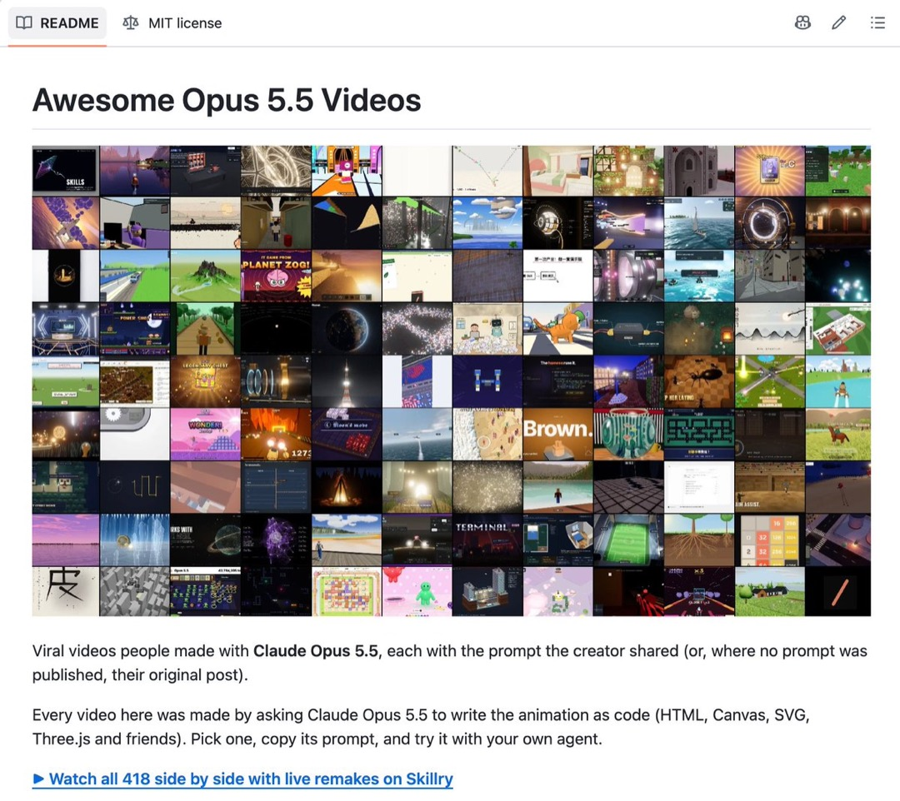
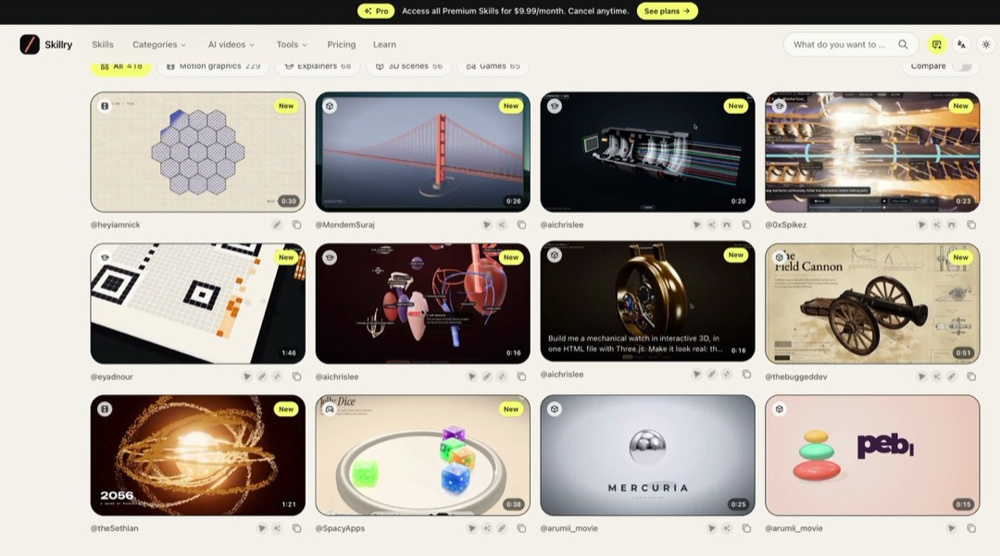
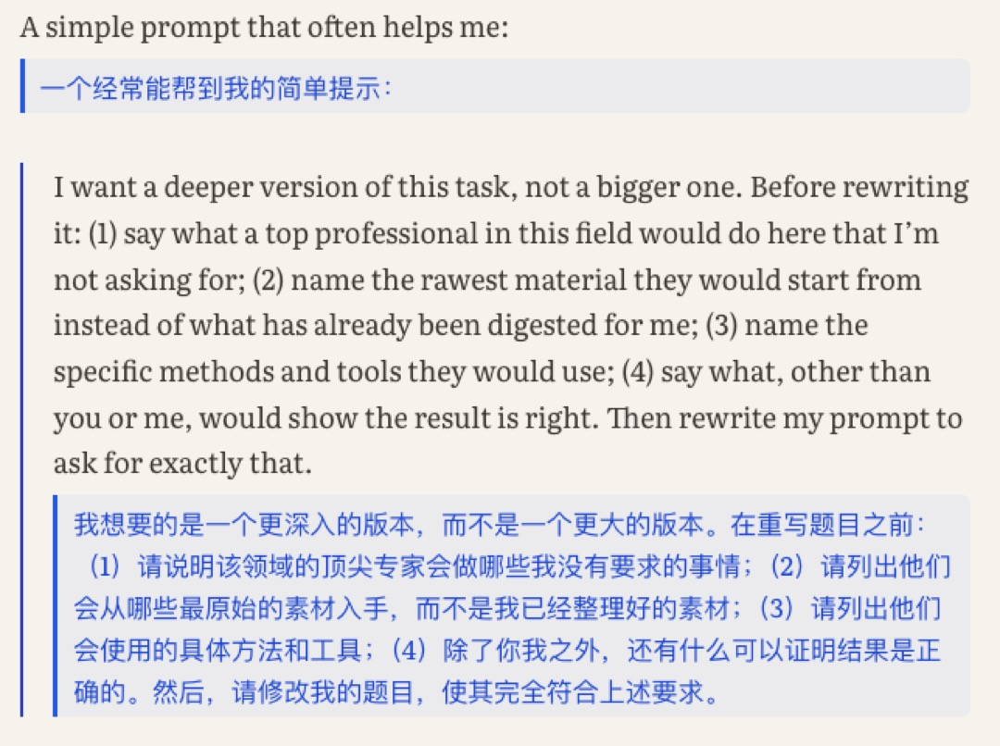
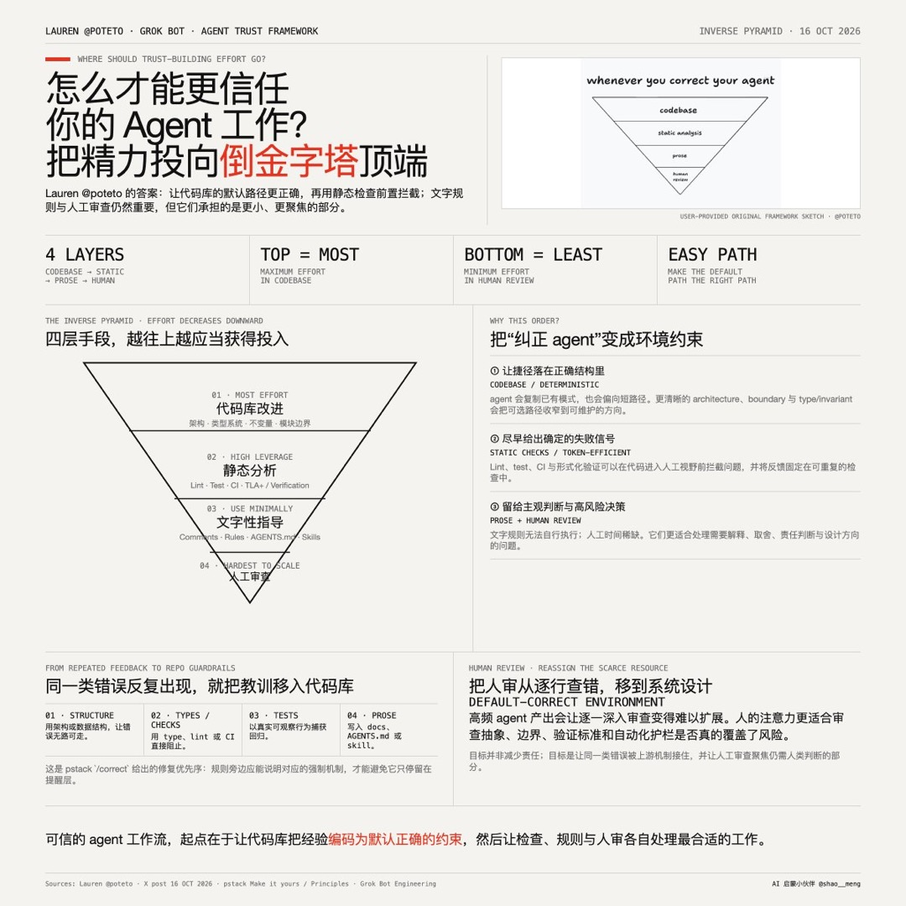
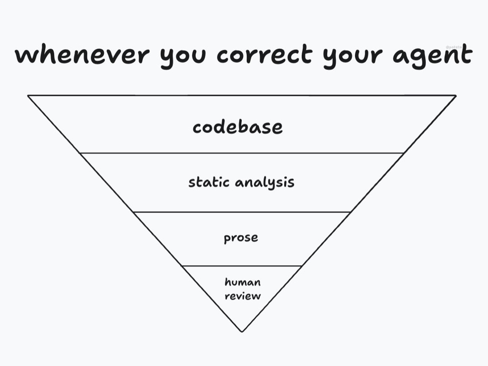

本期速览
01 Obelisk 免向量库检索 Agent 历史
02 阿里云企业 Agent 落地手册上线
03 PostgreSQL 19 推迟发布砍掉功能
05 DeepSeek Flash 开放搜索 API
07 Agent 信任倒金字塔：代码库优先
01｜Obelisk 免向量库检索 Agent 历史
来源（X） · @yifanxu_ephai · 2026-10-17 15:29
期待住了^_^😽😽😽
引用内容
Yuu💖 @QuantumTransf
我们做了 Obelisk，一个让 Coding Agent 能够检索自己所有历史 Session 的开源 Infra
它可以追溯一段代码为什么这样写、接手另一个 Agent 的任务，甚至研究过去两个月的开发历史，重新梳理整个项目的架构演进
而我们没有使用任何 Embedding 或向量数据库
🔗 GitHub: https://github.com/tommy0103/obelisk
为什么已经有那么多 Agent Memory 产品，我们还要做一个？
因为我们觉得，传统 Memory 可能从一开始就搞错了问题：
为什么要让模型在过去，决定未来需要记住什么？
预先提取的 Memory 不仅会丢失原始语境，还可能让 Agent 把局部结论当成普遍事实
我们的思路是：与其让 Agent 记住过去的结论，不如让它有能力重新研究过去
技术上也很简单：我们放弃了 Embedding 和向量数据库，使用 BM25 / FTS + Code Mode，让 Agent 自己搜索、阅读、验证历史
实际效果比想象中有趣：从追溯代码设计、跨任务 Handoff，到生成 Roadmap，甚至复盘过去一两个月的架构决策，都可以完成
部分 Benchmark 上的表现也优于 Mem0，我们还在寻找更有说服力的评测方式
更完整的技术讨论：
https://obelisk.antinomie.org/blog/
欢迎来玩，也欢迎挑战我们的设计！
02｜阿里云企业 Agent 落地手册上线
来源（X） · @Ryrenz · 2026-10-17 17:05
开放一个多月，GitHub 上已经 1647 star、242 个 fork，攒得挺快。
企业里做 Agent 最难的从来不是把 demo 跑通，是跑通之后那些事：架构怎么分层、上线怎么治理、权限和风险谁管、效果不好往哪调。这类经验平时散在各家内部文档里，外面根本看不到。ai-agent-handbook 把它整成了三十章的体系，从架构、构建、运行、治理一路写到调优。
最值得翻的是实践篇，案例来自研发效能、设计工程、运维安全与企业 IT、客户销售与运营这些真实场景，点名的企业和产品有吉利汽车、塔斯汀、畅捷通、MiniMax、信永中和、哔哩哔哩和 PolarDB-X。撰写的人来自阿里云内部多个团队，每篇各自认领。在线站点带章节导航、中文搜索、图表放大和阅读位置记忆，当文档读挺顺手。项目方说会继续维护，后面还要补企业案例和云上体验。
花钱买的课讲的往往就是这些，这回直接摊开了。
GitHub：https://github.com/aliyun/ai-agent-handbook
03｜PostgreSQL 19 推迟发布砍掉功能
来源（X） · @xiyue0803 · 2026-10-17 16:23
虽然每个问题改起来只要三行代码，但人类维护者光是逐一排查确认就彻底耗尽了时间。大家都以为AI写代码能加速发版，没想到AI审代码先把人类程序员干崩了。
04｜Opus 5.5 视频生成提示词合集
来源（X） · @leo_xiaolei · 2026-10-17 12:47
Opus5.5 做视频的最佳实践集合，
目前见过最全的了，全部可以直接查看
提示词和 Skill 都是提供的
地址：https://skillry.dev/ai-videos/opus-5-5?utm_source=github&utm_medium=readme&utm_campaign=awesome-opus5-5-videos#videos
github：https://github.com/yihui-dev/awesome-opus5-5-videos?utm_source=skillry&utm_medium=referral&utm_campaign=opus-5-5-videos


05｜DeepSeek Flash 开放搜索 API
来源（X） · @yanhua1010 · 2026-10-17 17:21
DeepSeek 刚放出最新 flash 模型 V4.1-Flash-1017，Benchmark 上几个 agent 编程榜直接把 Opus 5 吊打；做一道题大约 0.2 美金，而且还是 MIT 开源。
更狠的是它把自家的搜索和网页抓取 API 一起开放了，在 Claude Code 和 Codex 里调用，11 月 1 号前免费。
以前我们玩 agent 得付三份钱：贵的闭源模型、搜索服务、抓网页的服务。现在 DeepSeek 一家全包了，还便宜。
这下周末有的玩了。
引用内容
DeepSeek @deepseek_ai
中文译文
🚀 DeepSeek-V4.1-Flash-1017 来了！
在基准测试中表现更强、任务完成更快、输出更短——相比上一版本在性能和成本上都实现了帕累托改进。现已在我们的网站、应用和 API 上线。
🛠️ 针对 @DeepSeekHarness、腾讯 CodeBuddy、WorkBuddy 等进行了优化。升级到 DeepSeek Harness v0.2.1-rc.1 或更高版本，以获得最佳的新模型体验。
1/4
原文
🚀 DeepSeek-V4.1-Flash-1017 is here!
Stronger benchmark performance, faster task completion, and shorter outputs than the previous version—a Pareto improvement in performance and cost. Now live on our website, app, and API.
🛠️ Optimized for @DeepSeekHarness, Tencent CodeBuddy, WorkBuddy, and more. Upgrade to DeepSeek Harness v0.2.1-rc.1 or later for the best experience with the new model.
1/4


06｜Claude 一条提示词修正四类浅层输出
来源（X） · @uudonX · 2026-10-17 14:02
它没有要求 AI 写得更多，而是逼它把任务做得更深。
这条提示词厉害的地方，是它同时修正了 AI 最常见的四个问题：
1️⃣ 我们经常不知道自己遗漏了什么。让 AI 从顶尖从业者的角度重新审视任务，可以找出那些外行根本不会提出的要求。
2️⃣ AI 很容易在二手摘要上继续总结。要求回到原始数据、源代码、论文、财报、日志或用户访谈，能减少信息在多次转述中的失真。
3️⃣ “深入分析”太模糊。明确方法和工具以后，分析才会变成可以执行、复查的过程。
4️⃣ 也是最关键的一点：不能让 AI 自己宣布答案正确。代码要通过测试，研究要能追溯来源，预测要接受数据检验，产品方案要由真实用户和业务结果验证。
这条提示词背后其实是一套完整的工作方法：先找到遗漏的问题，再回到一手材料；明确专业方法，最后交给外部证据验证。
以后觉得 AI 的回答看起来很完整，读完却没有获得真正的新东西，可以先别让它继续扩写。把这段提示词发回去，让它重新定义任务。

引用内容
Felix Rieseberg @felixrieseberg
中文译文
大家好，我是 Felix。我是负责 Claude 的工程负责人。我热衷于看着人们展翅高飞，做出他们从未想过可能做到的事情。
我们经常把使用 AI 时做到"更有雄心"描述为一种建议，但这其实很难执行。我写了一篇教程：
https://felixrieseberg.com/how-to-be-more-ambitious-a-tutorial-for-humans-with-models/
原文
Hi, I'm Felix. I'm an eng lead working on Claude. I love watching people take flight and do things they never thought possible.
We often describe that as "being more ambitious" when using AI, which is tricky advice to follow. I wrote a tutorial:
https://felixrieseberg.com/how-to-be-more-ambitious-a-tutorial-for-humans-with-models/
07｜Agent 信任倒金字塔：代码库优先
来源（X） · @shao__meng · 2026-10-17 09:04
Grok Bot 团队 @poteto 提出了一套如何信任 AI Agent 工作成果的四层“倒金字塔”框架。她认为，与其花精力“管教” Agent，不如花精力改造代码库本身！
# 四层倒金字塔 (精力投入从上到下递减)
第一层：代码库改进 (投入最多) 更好的架构、更强的类型系统与不变量、清晰的模块边界。
Lauren 认为这本质上“就是好的软件工程”。理由在于 Agent 的天性：Agent 倾向于复制已有代码、走最短路径；所以与其对抗这个天性，不如让最短路径本身就是正确路径。
第二层：静态分析 Lint 规则、测试、CI、形式化验证(如 TLA+)。这是性价比很高的第二道防线，用极低的 token 成本在问题早期就拦截它，出错反馈是确定性的，不依赖 Agent “理解”了什么。
第三层：文字性指导 (最少使用) 代码注释、规则文件 (如 AGENTS.md)、Skills 描述等。这一层的共同弱点是无法强制执行，它要求 Agent 自行判断是否遵守，而 Agent 的判断并不总是可靠，所以只能作为补充，用在确实需要主观判断的场合。
第四层：人工审查 (最难规模化) 人的精力有限，不应消耗在逐行检查 Agent 产出上，而应投向更上游的事：设计出让 Agent 默认就做对的环境。
为什么金字塔是“倒置”的？
传统上团队把大量精力放在金字塔底部 (写规范、人工审查)，而 Lauren 主张反转：
· 越往上层，手段越是确定性的 (代码结构直接决定 Agent 能走什么捷径) 且token 高效的(不需要反复沟通纠偏)；
· 越往下层，越依赖不可靠的理解与不可扩展的人力。
这和业界近年 “从 prompt engineering 转向 context/engineering 工程” 的共识是同一方向；但 Lauren 把它推到了更根本的层面：连提示词本身都只是第三等手段，真正的杠杆在代码库里。

引用内容
lauren @poteto
中文译文
你如何更信任你的 agent 的工作？复制这个帖子/链接，把它给你的 @bot 或 agent！
1. 代码库改进：这就是好的软件工程——更好的架构、更强的类型和不变量、清晰的边界。agent 喜欢复制现有代码并走最短路径，所以让容易做的事成为正确的事。通过代码从根源上消除问题，你就再也不用去想它了。
2. 静态分析：lint 规则、测试、CI、形式化验证（例如 TLA+）。非常节省 token 的提前发现问题的方式。
3. 散文/文本：注释、规则、AGENTS.md、skills——任何无法通过机制强制执行、需要 agent 自行判断的内容。尽量少用，但一定要使用 /create-verification-skill。
4. 人工审查：最难扩展的环节。以 agent 提交代码的速度，几乎不可能彻底审查每一个 PR，所以要把精力花在杠杆最高的点上——设计一个让 agent 默认就能做正确事情的环境。
这形成了一个倒金字塔：你应该把大部分精力放在最上面，最少的放在最下面。代码库改进是确定性的，更加节省 token，也能让你晚上睡得更安稳。
安装 https://github.com/cursor/plugins/tree/main/pstack 并创建一个新的 Project：
1. 查阅我的 Slack/聊天消息和代码审查评论，看我在 PR、代码、架构上给了哪些反馈
2. 用 /recall 查阅我过去的对话记录，学习我如何引导 agent
3. /poteto-mode 用 /correct 和 /architect 对过去的提交进行分析，找出 agent 最常犯的陷阱，然后提出一个重新架构我负责的代码的计划，使其对 agent 更友好。用原型验证来回答开放性问题，而不是把问题推给我，并用真实数据支撑这个计划。
4. 开始之前，用 /sharpen + /your-own-words 跟我确认这个提示词
原文
how do you trust your agents' work more? copy this post/link and give it to your @bot or agent!
1. codebase improvements: this is just good software engineering - better architecture, stronger types and invariants, clear boundaries. agents love to copy what exists and take the shortest path, so make the easy thing the right thing. categorically eliminate problems through code and you won't need to think about it again.
2. static analysis: lint rules, tests, CI, verification (eg TLA+). very token efficient ways to catch issues ahead of time.
3. prose: comments, rules, AGENTS.md, skills - anything that can't be enforced and requires agent judgment. use it minimally, but do use /create-verification-skill.
4. human review: the hardest to scale. at the rate agents land code, it's pretty much impossible to thoroughly review every PR, so spend that effort on the highest leverage point, designing an environment where agents do the right thing by default.
this forms an inverse pyramid: you want most of your effort at the top, least at the bottom. codebase improvements are deterministic, making it more token efficient, and lets you sleep more soundly at night.
install https://github.com/cursor/plugins/tree/main/pstack and create a new Project:
1. look through my slack/chat messages and code review comments where i've given feedback on PRs, code, architecture
2. use /recall on my past transcripts to learn how i steer agents
3. /poteto-mode use /correct and /architect on past commits to find the most common pitfalls agents fall into, then propose a plan to rearchitect the code i own so it's more agent friendly. answer open questions with prototyping rather than defer to me, and back the plan with real data.
4. before you begin, use /sharpen + /in-your-own-words and confirm this prompt with me
